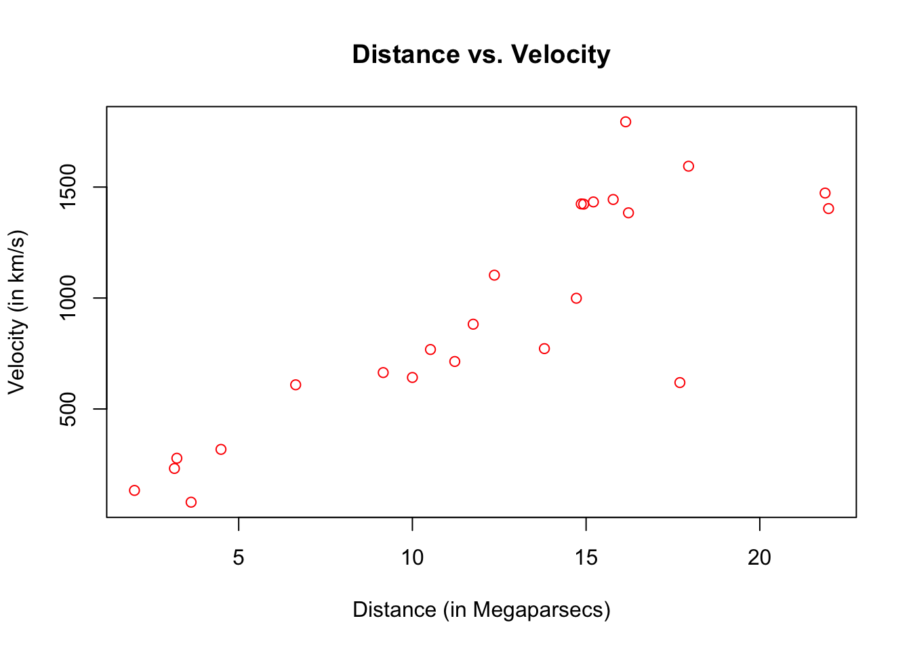

Chapter 6 Case Study: Monte-Carlo Integration
Monte Carlo integration is a powerful technique for numerical integration. It is particulary useful to evaluate integrals of “high-dimension”. A detailed (and formal) discussion of this method is clearly beyond the scope of this class and we shall restrict our attention to most basic form(s) of Monte Carlo Integration and breifly discuss the rational behind this method.
Originally, such Monte Carlo methods were known under various names among which statistical sampling was probably the most commonly used. In fact, the name Monte Carlo was popularized by several physics researchers, including Stanislaw Ulam, Enrico Fermi and John von Neumann. The name is believed to be a reference to a famous casino in Monaco where Stanislaw Ulam’s uncle would borrow money to gamble. Enrico Fermi was one of the first to this technique which he employed to study the properties newly-discovered neutron in the 1930s. Later, these methods played for example a central role in many of thesimulations required for the Manhattan project.
Suppose we are interested in computing the following intergal:
\[I = \int_a^b f(x) dx.\]
Of course, this integral can be approximated by a Riemann sum,
\[I \approx \Delta x \sum_{i = 1}^n f(a + (i-1) \Delta x),\]
where \(\Delta x = \frac{b - a}{n}\;\) and the idea behind this approaximation is that as the number of partions \(n\) increases the Riemann sum will become closer and closer to \(I\). Also (and under some technical conditions), we have that
\[I = \lim_{n \to \infty} \Delta x \sum_{i = 1}^n f(a + (i-1) \Delta x).\]
In fact, the rational of a Monte Carlo Integral is quite close to the Riemann sum since, in its most basic form, we approximate \(I\) by averaging samples of the function \(f(x)\) at uniform random point within the interval \([a, b]\). Therefore, the Monte Carlo estimator of \(I\) is given by
\[\begin{equation} \hat{I} = \frac{b - a}{B} \sum_{i = 1}^B f(X_i), \tag{6.1} \end{equation}\]where \(X_i = a + U_i (b - a)\) and \(U_i \sim \mathcal{U}(0,1)\). In fact, (6.1) is quite intuniteve as \(\frac{1}{B} \sum_{i = 1}^B f(X_i)\) respresents an estimation of the average value of \(f(x)\) in the interval \([a, b]\) and thus \(\hat{I}\) is simply the average value time the length of the interval, i.e. \((b-a)\).
A more formal argument on the validity of this approach can be found in analysyzing the statistical properties of the estimator \(\hat{I}\). In order to do so, we start by considering its expected value \[ \mathbb{E}\left[ \hat{I} \right] = \frac{b - a}{B} \sum_{i = 1}^B \mathbb{E}\left[ f(X_i) \right] = \frac{b - a}{B} \sum_{i = 1}^B \int f(x) g(x) dx, \]
where \(g(x)\) denotes the pdf of \(X_i\). Since \(X_i \sim \mathcal{U}(a, b)\) it follows that
\[ g(x) = \left\{ \begin{array}{ll} \frac{1}{b - a} & \mbox{if } x \in [a, b] \\ 0 & \mbox{if } x \not\in [a, b] \end{array} \right. \]
Therefore, we have
\[ \mathbb{E}\left[ \hat{I} \right] = \frac{b - a}{B} \sum_{i = 1}^B \int_a^b \frac{f(x)}{b-a} dx = \int_a^b f(x) dx = I, \]
Since \(X_i\) are iid, the same can be said about \(f(X_i)\) and therefore by the Strong Law of Large Numbers we have that \(\hat{I}\) converge almost surely to \(I\), which means that
\[ \mathbb{P}\left(\lim_{B \to \infty} \hat{I} = I \right) = 1. \]
This result imples that as the number of simulations \(B\) goes to infinity we can guarantee that the solution will be exact. Unfortunately, this result does give us any information on how quickly this estimate converges to “sufficiently accurate” solution for the problem at hand. This can be done by studying the variance of \(\hat{I}\) and its rate of convergence.
\[ \begin{aligned} \operatorname{var} \left( \hat{I} \right) &= \left(\frac{b - a}{B}\right)^2 \sum_{i = 1}^B \left\{\mathbb{E}\left[f^2(X_i)\right] - \mathbb{E}^2\left[f(X_i)\right]\right\}\\ &= \frac{1}{B^2} \sum_{i = 1}^B \left\{(b-a) \int_a^b f^2(x) dx - \left(\int_a^b f(x) dx \right)^2 \right\}\\ &= \frac{(b-a) I_2 - I^2}{B} \end{aligned} \]
where \(I_2 = \int_a^b f^2(x) dx\). A simple estimator of this quantity is given by
\[ \hat{I}_2 = \frac{b - a}{B} \sum_{i = 1}^B f^2(X_i), \]
and therefore using \(\hat{I}\) we obtain:
\[ \widehat{\operatorname{var}} \left(\hat{I} \right) = \frac{(b-a) \hat{I}_2 - \hat{I}^2}{B} = \frac{b - a}{B^2} \sum_{i = 1}^B\left[ (b - a )f^2(X_i) - f(X_i)\right] \]
Thus, it is easy to see that the rate of convergence of \(\widehat{\operatorname{var}} \left(\hat{I} \right)\) is \(B^{-1}\). This implies that if we wish to reduce the error (or standard deviation) by half we need to quadruple \(B\). Such phenomon is very common in many research such as Statistics is often called the curse of dimensionality.
The function below implements the above precedure and is also available in the stat298 package.
There isn’t anything difficult about this code but one thing we haven’t seen yet is how to evaluate a string
my_fun = "x^2"
x = 0:3
eval(parse(text = my_fun))## [1] 0 1 4 9#' Generate random points with bivariate uniform distribution
#'
#' @param x_range A vector of dimension 2 used to denote the parameter
#' of the uniform distribution on the x-axis.
#' @param y_range A vector of dimension 2 used to denote the parameter
#' of the uniform distribution on the y-axis.
#' @param B A positive number used to denote the number of simulation.
#' @param seed A number used to control the seed of the random number
#' generated by this function.
#' @return A B x 2 matrix containing the simulated points.
#' @examples
#' gen_points(x_range = c(0, 1), y_range = c(0, 2), B = 10)
#' gen_points(x_range = c(-10, 1), y_range = c(0, 0.1), B = 5)
monte_carlo_integral_uniform = function(x_range, fun, B, seed = 1291){
# A few checks
# Check x_range
if (length(x_range) != 2 || x_range[1] >= x_range[2]){
error("x_range is uncorrely specified")
}
# Check fun
if (class(fun) != "character"){
error("fun is uncorrectly specified and should be a character")
}
x = mean(x_range)
test_fun = try(eval(parse(text = fun)), silent = TRUE)
if (class(test_fun) == "try-error"){
error("fun cannot be evaluated")
}
# Check B
if (B < 1){
error("B is uncorrely specified")
}
# Set seed
set.seed(seed)
# Compute the length of the interval, i.e. (b-a)
interval_length = diff(x_range)
# Let's draw some uniforms to get Ui and Xi
Ui = runif(B)
Xi = x_range[1] + Ui*interval_length
# Compute \hat{I}
x = Xi
I_hat = interval_length*mean(eval(parse(text = fun)))
# Compute \hat{I}_2
I2_hat = interval_length*mean((eval(parse(text = fun)))^2)
var_I_hat = (interval_length*I2_hat - I_hat^2)/B
# Output list
out = list(I = I_hat, var = var_I_hat)
out
}n_step = 10^3
x = seq(from = -0.35, to = 3.35, length.out = n_step)
y = x^2
set.seed(6)
Ui = runif(4, 0 ,3)
par(mfrow = c(1, 4))
for (i in 1:4){
plot(NA, xlim = range(x), ylim = range(y), xlab = "x", ylab = "f(x)")
grid()
trans_col = hcl(h = seq(15, 375, length = 5), l = 65, c = 100, alpha = 0.15)[1:5]
lines(x, y, col = "blue4")
points(Ui[i], Ui[i]^2, pch = 16, col = "yellow2")
polygon(c(0, Ui[i], Ui[i], 0), c(0, 0, Ui[i]^2, Ui[i]^2),
border = NA, col = trans_col[i])
}

Example
\[ I = \int_0^3 x^2 dx = \frac{1}{3} \left[x^3\right]_0^3 = 9 \]
B = 4^(4:12)
results = matrix(NA, length(B), 3)
for (i in 1:length(B)){
mc_res = monte_carlo_integral_uniform(c(0, 3), "x^2", B = B[i], seed = i+1)
results[i, ] = mc_res$I + 2*c(0, sqrt(mc_res$var), -sqrt(mc_res$var))
}
trans_blue = hcl(h = seq(15, 375, length = 3), l = 65, c = 100, alpha = 0.15)[2]
plot(NA, xlim = range(B), ylim = range(results[, 2:3]), log = "x",
ylab = "Estimated Integral", xlab = "Number of Simulations B",
xaxt = 'n')
grid()
axis(1, at = B, labels = parse(text = paste("4^", 4:12, sep = "")))
polygon(c(B, rev(B)), c(results[, 2], rev(results[, 3])), border = NA, col = trans_blue)
lines(B, results[, 1], type = "b", col = "blue4", pch = 16)
abline(h = 9, col = "red4", lty = 2)
legend("topright", c(expression(I[1]), "Confidence Interval", "True Value"), bty = "n",
pch = c(16, 15, NA), lwd = c(1, NA, 1), lty = c(1, NA, 2),
pt.cex = c(1, 2, NA), col = c("blue4", trans_blue, "red4"))
\[ \widehat{\operatorname{var}} \left(\hat{I} \right) = \mathcal{O}(B^{-1}). \]
The Monte-Carlo approach generalized in the following way. We suppose again that we wish to solve
\[\int_a^b f(x) dx,\]
and that \(X_i \sim G\) where the pdf of \(X_i\) is such that
\[ \max_{\mathbb{R} \setminus [a, b]} \; g(x) = 0 . \]
\[ \tilde{I} = \frac{1}{B}\sum_{i = 1}^B \frac{f(X_i)}{g(X_i)} \]
Of course, in the case \(X_i \mathcal{U}(a, b)\), then \(\hat{I}\) and \(\hat{I}\) are equivalent.
[ =
]
To understand the very basic idea of Monte Carlo integration we shall start with a simple example. Suppose we wish to compute:
\[ I_1 = \int_{-1}^2 3x^2 dx. \]
It is easy to verify that \(\max_{\Omega} \; f(x) = 12\) and \(\min_{\Omega} \; f(x) = 0\) where \(\Omega = (-1, 2)\) and therefore we have that
\[I_1 \leq I_2 = \int_{-1}^2 \int_{0}^{12} dy dx = 36.\]
The following code and image illustrates the situation:
n_step = 10^3
x = seq(from = -1.35, to = 2.35, length.out = n_step)
x_in_omega = x[x >= -1 & x <= 2]
y = 3*x^2
col_I1 = hcl(h = seq(15, 375, length = 3), l = 65, c = 100, alpha = 0.2)[2]
plot(NA, xlim = range(x), ylim = range(y), xlab = "x", ylab = "f(x)")
grid()
polygon(c(-1, 2, 2, -1), c(0, 0, 12, 12), border = "red3", lty = 2, lwd = 2)
polygon(c(x_in_omega, rev(x_in_omega)), c(rep(0, length(x_in_omega)),
rev(y[x >= -1 & x <= 2])), border = "NA", col = col_I1)
lines(x, y, col = "blue4")
legend("topleft", c(expression(I[1]), expression(I[2]), "f(x)"), bty = "n",
pch = c(NA, 15, NA), lwd = c(2, NA, 1), lty = c(2, NA, 1),
pt.cex = c(2, 2, NA), col = c("red3", col_I1, "blue4"))

>>>>>>> origin/masterSuppose that we generate (uniformly) a large number points, with coordinates (\(U_1\), \(U_2\)) inside the red region. We assume that \(U_1 \sim \mathcal{U}(-1, 2)\) and \(U_2 \sim \mathcal{U}(0, 12)\). The function below also t
#' Generate random points with bivariate uniform distribution
#'
#' @param x_range A vector of dimension 2 used to denote the parameter
#' of the uniform distribution on the x-axis.
#' @param y_range A vector of dimension 2 used to denote the parameter
#' of the uniform distribution on the y-axis.
#' @param B A positive number used to denote the number of simulation.
#' @param seed A number used to control the seed of the random number
#' generated by this function.
#' @return A B x 2 matrix containing the simulated points.
#' @examples
#' gen_points(x_range = c(0, 1), y_range = c(0, 2), B = 10)
#' gen_points(x_range = c(-10, 1), y_range = c(0, 0.1), B = 5)
gen_points = function(x_range, y_range, B, seed = 1291){
# A few checks
# Check x_range
if (length(x_range) != 2 || x_range[1] >= x_range[2]){
error("x_range is uncorrely specified")
}
# Check y_range
if (length(y_range) != 2 || y_range[1] >= y_range[2]){
error("y_range is uncorrely specified")
}
# Check B
if (B < 1){
error("B is uncorrely specified")
}
# Set seed
set.seed(seed)
# Let's draw some uniforms
mat_out = matrix(runif(2*B), B, 2)
mat_out[, 1] = mat_out[, 1]*diff(x_range) + x_range[1]
mat_out[, 2] = mat_out[, 2]*diff(y_range) + y_range[1]
mat_out
}B = 500
mc_points = gen_points(x_range = c(-1, 2), y_range = c(0, 12), B = B)
n_step = 10^3
x = seq(from = -1.35, to = 2.35, length.out = n_step)
x_in_omega = x[x >= -1 & x <= 2]
y = 3*x^2
col_I1 = hcl(h = seq(15, 375, length = 3), l = 65, c = 100, alpha = 0.2)[2]
plot(NA, xlim = range(x), ylim = range(y), xlab = "x", ylab = "f(x)")
grid()
polygon(c(-1, 2, 2, -1), c(0, 0, 12, 12), border = "red3", lty = 2, lwd = 2)
polygon(c(x_in_omega, rev(x_in_omega)), c(rep(0, length(x_in_omega)),
rev(y[x >= -1 & x <= 2])), border = "NA", col = col_I1)
lines(x, y, col = "blue4")
points(mc_points, pch = 19, cex = 0.5)
legend("topleft", c(expression(I[1]), expression(I[2]), "f(x)"), bty = "n",
pch = c(NA, 15, NA), lwd = c(2, NA, 1), lty = c(2, NA, 1),
pt.cex = c(2, 2, NA), col = c("red3", col_I1, "blue4"))